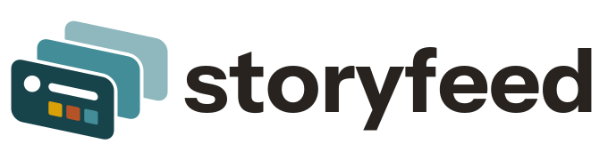

storyfeed · current brand kit
Selected stacked-card identity, refreshing activities, and centered social artwork.
Identity
Single ink is the baseline. Duotone treatments remain labelled comparisons.


Current centered social artwork
Iteration10 · single ink · canonical 2400×1200, cropped 1200×630 and actual 255px thumbnail. Genuine website renderer with deterministic fixture data.
Inspect unfaded native feed fixture
Refreshing activity queue
Nine activity motifs advance through three cards. Pause, replay and step controls are in the review; reduced motion shows the complete selected still.
Open motion review · Open hero context
README banner · 2× export
1600px export displayed at 800px. Fixed outlined type; three-second holds, .75-second advances. Static SVG · GitHub-rendered README preview

Individual assets and source
marks — individual downloads
icons — individual downloads
avatars — individual downloads
lockups — individual downloads
social — individual downloads
banners — individual downloads
fonts — individual downloads
Distribution manifest · Frozen source hashes · Font licence